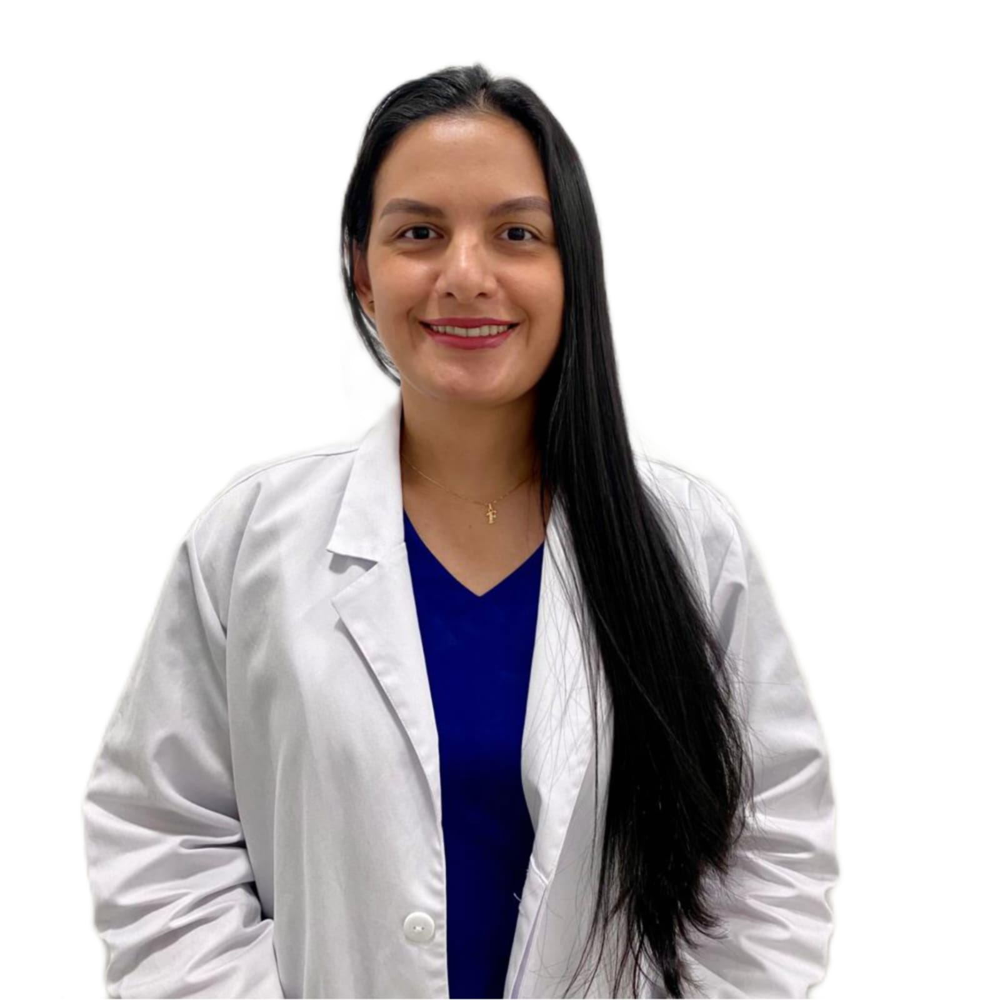
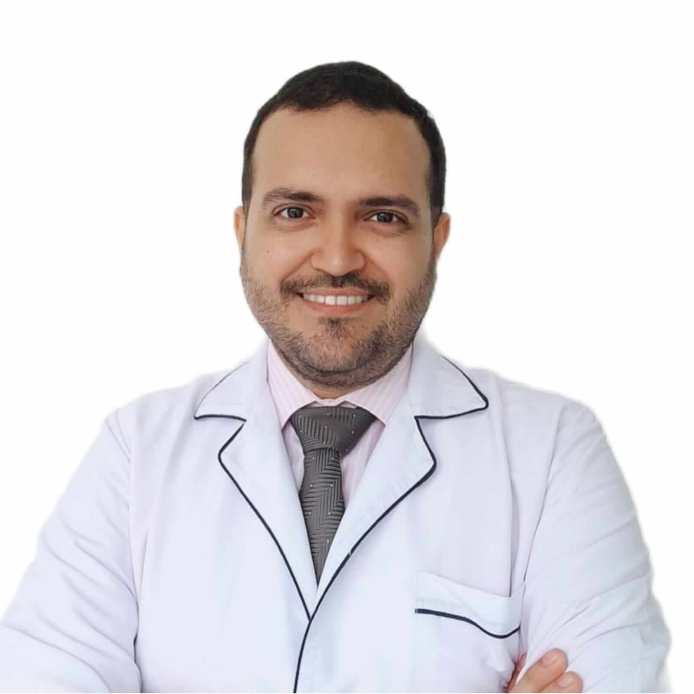
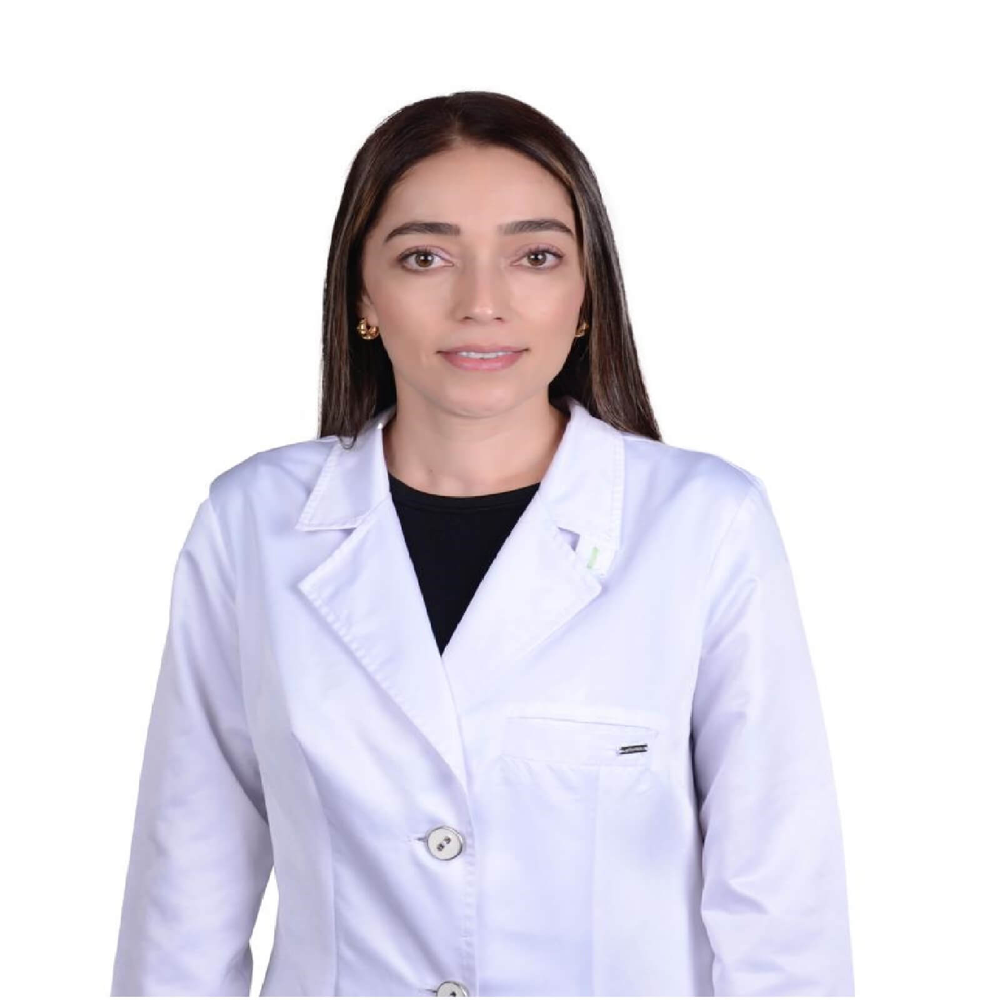

Grupo selecto de profesionales especialistas y subespecialistas
en salud visual con amplia experiencia en el sector, actualmente
todos nuestros especialistas laboran en las más prestigiosas clínicas
oftalmológicas y hospitales del Departamento de Antioquia, nuestros cirujanos
tienen más de 5.000 cirugías exitosas en las diferentes especialidades oftalmológicas
con los resultados esperados y planeados.
Nuestros especialistas
Dr. Mauricio Agudelo Cardona
Oftalmólogo - Corneólogo

Dra. Laura Vanessa Romero De León
Oftalmóloga - Glaucomatóloga

Dr. Jairo Alberto Ropero Rosillo
Oftalmólogo - Oftalmopediatra y Estrabólogo
Dr. Sergio José Rojas Rangel
Optómetra - Optómetra Pediátrico y Ortoptista
Dr. José Agustín Jaramillo Solá
Oftalmólogo - Retinólogo

Dra. Liliana Marcela Galeano Salazar
Oftalmóloga General
Nuestros Servicios
La visión es de las partes mas importantes y hermosas de la vida por ello te
acompañamos en el proceso
de cuidarte de manera preventiva o también ayudarte a tratar un problema existente con nuestro gran
equipo que esta dispuesto a atenderte y ayudarte de la mejor manera.
• Consulta de Oftalmología General.
• Consulta de Oftalmología Especializada en Glaucoma.
• Consulta de Oftalmología Especializada en Córnea y Segmento Anterior.
• Consulta de Oftalmología Especializada en Oftalmopediatría y Estrabismo.
• Consulta de Oftalmología Especializada en Retina y Vítreo.
• Consulta de Oftalmología Prioritaria y/o Urgente.
• Consulta de Optometría Clínica.
• Consulta Especializada en Optometría Pediátrica.
• Consulta, Terapias de Ortóptica y Pleóptica.
• Adaptación de Lentes de Contacto.
• Óptica.
• Unidad Completa Para el Control de Miopía (Optometría, Retinología, Oftalmopediatría, Biometría
IOL MASTER).
• Unidad Completa en Segmento Anterior (Corneología y Optometría).
• Unidad Completa de Glaucoma (Glaucomatología y Optometría Baja Visión).
• Unidad Completa de Retina (Retinología y Optometría Baja Visión).
• Unidad Completa de PYP Oftalmológico (Oftalmología y Medicina Interna).
• Unidad Completa en Salud Infantil (Oftalmopediatría y Médico Pediatra).
• Cirugía de Estrabismo y Especialidad Oftalmopediátrica.
• Inyecciones Intravitreas.
• Iridotomía Laser.
• Iridoplástia Laser.
• Capsulotomía Laser.
Óptica
Contamos con S.O.S ÓPTICA la cual es una reconocida óptica con más de 10 años
de experiencia en el mercado, cuentan con laboratorios para la fabricación de lentes
oftálmicos de gran trayectoria y la mejor calidad tales como ZEISS, MEGALENS, PRECIZONLAB,
SERVIOPTICA, VISIONLAB y grandes proveedores en monturas para cubrir todas las necesidades
de sus usuarios; atendido por su representante legal y propietaria Alejandra Catalina
Sepúlveda Rivillas.
Quiénes Somos
MISIÓN
Contribuir al cuidado de la salud visual a través de la prestación de servicio de alta
calidad centrado
en la atención, ética y profesionalismo con un equipo humano altamente capacitado para dar solución y
manejo a cualquier problema de salud visual que se presente.
VISIÓN
Para el año 2025, ser una de las instituciones especializadas en salud visual más
reconocidas y queridas
del Oriente Antioqueño, consolidándose como un centro especializado con altos estándares de calidad en
la atención y manejo de las alteraciones de la visión a nuestros usuarios.
¿Listo para cuidar tu vista? Contáctanos para programar una cita.